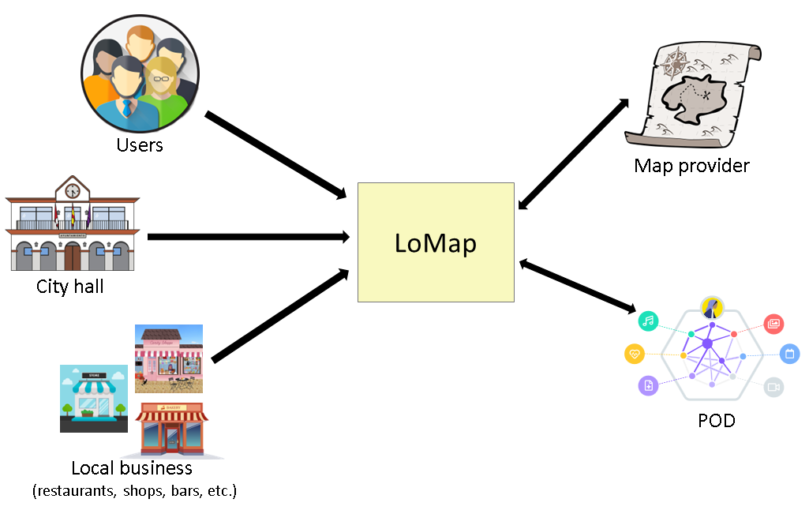
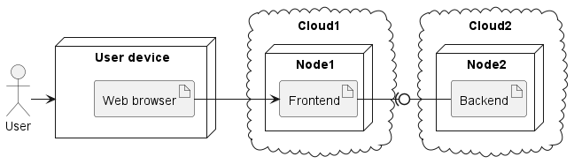
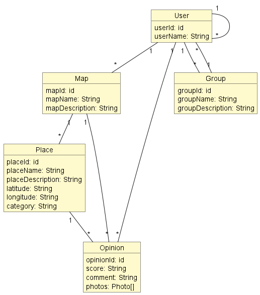

1. Introduction and Goals
Hypothetically, we have been presented with a project by the Brussels City Council to create an application called LoMap. This application will consist of customized maps that city residents can access, where they can share different places in the city such as bars, restaurants, monuments, and so on.
It is also proposed that this application could be extrapolated to other cities, therefore we will aim for high compatibility between the different elements of the architecture. Additionally, we will possible scalability of the project. As stakeholders, we would have the Brussels City Council, our professors who will review and evaluate the development and all the steps taken in the project, and us as students, who will seek to learn and adapt to any difficulties that may arise during development.
1.1. Requirements Overview
-
Add different types of locations (bars, shops, restaurants, landscapes, monuments, etc.).
-
Display these places in a Map window.
-
Allow users to rate and comment on the added locations.
-
Manage the information that users can share with their friends from within the app.
-
Store the information about any location in each user’s SOLID pod.
-
Certain information can be stored centrally for performance reasons, but always respecting the privacy of the users.
-
Allow users to view the places and information about them that their friends have shared.
-
Provide filtering options for the information displayed on the map (by category, friends, etc.).
1.2. Quality Goals
-
Aesthetics and usability for users with no technical knowledge.
-
Security and privacy for users.
-
Reliability of the application during use.
-
Innovative and usable solution.
-
Proper and technical documentation to capture all decisions made by the team.
-
Quality of the code, which will be stored manually and automatically.
-
Quality of the project’s testing strategy.
-
Proper project management through the use of issues, meeting minutes, record keeping and monitoring of every decision made by the team throughout the project.
-
Use of continuous integration.
-
Interoperability of data across different applications that may be developed with the same functionality.
1.3. Stakeholders
| Role/Name | Contact | Expectations |
|---|---|---|
Students |
Andrés Ángel González Granda, Pedro Garcia-Cañal Sánchez, Adrián Alves Morales y Marcos Caraduje Martínez |
They play the role of developers, software architects and administrators. Create an architecture, develop the software and pass the course. |
Teachers |
Jose Emilio Labra Gayo, Pablo González, Irene Cid Rico y Cristian Augusto Alonso |
Play the role of client. They supply the functional requirements (what the application must do). They impose restrictions (Mandatory use of PODs). Learning and proper functioning of the team during the development of the project. |
Users |
Get personalized maps of places and local businesses in the city. Manage the information they share with other users. |
|
Local business |
Create their own spaces as a digital version of their physical location. Increase business opportunities by reaching a greater number of new customers. |
|
Customer. Brussels City Hall |
Promoter of the initiative. Obtain software that meets the requirements within the term and cost stipulated in the contract. |
|
Software architect |
Design an architecture after analyzing functional requirements, quality attributes, and constraints. Create a generic software solution that can be deployed and used in other cities. |
|
Developers |
Develop the software within the established deadline. |
|
Administrators |
After the deployment of the software in production, they monitor and resolve possible incidents. |
|
POD provider |
Allow data storage in a secure and decentralized way. Allow users to control which people and applications can access their data. |
|
Map provider |
Pending select |
It provides the base cartography in which users add places of interest to obtain personalized maps. |
2. Architecture Constraints
2.1. Technical Constraints
The technologies that are going to be used to develop this project are:
| Constraint | Explanation |
|---|---|
React |
The React Framework will be used for making the user interface. |
Node.js |
The application’s back-end will be implemented through Node.js. |
The SOLID specification |
The application must use PODs to store user data. |
GitHub |
Employed for version control and for team coordination, with tools such as issues and branches. |
Interactive Map |
A means of implementing an interactive map must be included. |
Docker |
The web application will run on docker. |
2.2. Organizational constraints
| Constraint | Explanation |
|---|---|
Data |
All of the data must be uniquely stored in each user’s PODs, and they’re the only ones with access to it. |
Time |
The application must be finished and delivered within a given timeframe. |
Git |
The use of Git must be mandatory in order to keep a good workflow. |
New Technologies |
Most of the technologies employed in this proyect have never been used by any of us. |
2.3. Conventions
| Constraint | Explanation |
|---|---|
Language |
The application, both the documentation and the code, will be entirely developed in english. |
TypeScript |
As we are using the TypeScript programming language, it’s naming conventions must be followed. |
SOLID |
The application must follow the SOLID specification. |
Arc42 |
The documentation will be written following the arc42 architecture. |
3. System Scope and Context
3.1. Business Context

- Users
-
Citizens creating custom maps about local places and businesses in the city.
- City hall
-
Brussels City Hall. Institution that promotes the creation of the application.
- Local business
-
Restaurants, shops, bars, etc. In a later phase, establishments will be allowed to create their own spaces as a digital version of their physical location.
- Map provider
-
It provides the base cartography in which users add places of interest to obtain personalized maps.
- POD
-
Personal store associated with each user. Custom maps and information related to places of interest are stored in the POD. The user will always have control over their information.
4. Solution Strategy
4.1. Technologies
4.1.1. Back-end
-
NodeJS: It is a JavaScript runtime environment used to create scalable server-side and network applications through virtual private servers.
4.1.2. Front-end
-
React: It is an open-source JavaScript library designed for creating user interfaces with the goal of facilitating the development of single-page applications.
-
TypeScript: It is an open-source programming language designed for executing large projects and allows for structured work.
4.1.3. Database
-
MongoDb: Will be used for creating the database as we decided that, because it is a NoSQL database, it makes us able to work with a lot of data without having to spend too much time in the modelling process.
-
SOLID specification: We will use PODs for the users, as it provides a high ammount of security for each user’s data.
4.2. Decisions to achieve quality goals
-
Privacy: We will use PODs so that each user has more security and is less vulnerable.
-
Mantainability: The architecture of the application must be built in a way that allows us to keep adding and modifying features while having to replace as little code as possible.
-
Usability: The app must be accesible and usable, and for that we will be implementing several design features into our user interface in order for clients to be able to complete their tasks efficiently.
-
Disponibility: The application must always work with as little errors as possible and, if any bugs appear, the application must be able to take care of them and inform the user in an organised manner. As such, we will implement mechanisms for these functionalities to take effect.
4.3. Organizational Decisions
4.3.1. Issues
Each team member will create issues whenever they are going to perform a task and assign which members will perform it.
4.3.2. Communication
Task allocation will mainly be perfomed through GitHub issues, although we will be performing regular meetings on Discord while also using WhatsApp for quick communication.
4.3.3. Documentation
All of the project’s documentation, as well as the code itself, will be entirely made in english.
5. Building Block View
5.1. Whitebox Overall System: Level 1
- Motivation
-
Each user will have access to a personal POD in which they will be able to store locations and opinions, as well as to share them to the rest of the userbase. These PODs guarantee that the user’s data will be safely secured.
- Contained Building Blocks
| Name | Responsibility |
|---|---|
User |
Client who will make use of the application. |
POD |
Stores the user’s data. |
Application |
Will exchange info between user and POD. |
- Important Interfaces
-
These will be determined as the application is developed.
5.2. Level 2
The application itself will be designed with the Model-view-controller (MVC) architectural pattern. As such, webapp will be divided in three layers:
| Name | Description |
|---|---|
Model |
Internal logic of the application, it sends info to the controller and to the PODs so it can function correctly. |
View |
What the user of the application will see. |
Controller |
Allows the model layer and the view layer to communicate with each other. |
5.3. Level 3
Here’s a list of each of the application’s building blocks:
- View
-
-
Home page
-
Register
-
Log in
-
Create map
-
Add place
-
Add opinion
-
Explore place
-
- Model
-
-
Map
-
Place
-
Opinion
-
User
-
- Controller
-
-
MapController
-
PlaceController
-
OpinionController
-
UserController
-
AccessController
-
6. Runtime View
6.1. Logging into the application
A registered user must be able to log into the application sending a request to the Rest API:

6.2. Adding a location
The location info is stored in the PODs and can be shared with other users

6.3. Map filtering
User’s can visualize maps by filtering them by category, friends, etc.

7. Deployment View

- Motivation
-
Access to the application will be through web browsers from users' devices.
The application is divided into 2 modules: Frontend and Backend.
The Frontend is the interface with which users interact.
The Backend manages the logic of the application and the access to the data.
It is pending to decide on which platform or platforms the frontend and backend of the application will be deployed.
- Quality and/or Performance Features
-
Deployment in the cloud has advantages over an on-premises solution (software deployed on hardware located at the client’s premises, in this case the Brussels City Council):
-
Scalability. By working with virtualized hardware in the cloud, the system can be easily scaled, even automatically in the face of increased demand.
-
Availability. Cloud platforms guarantee high availability that can be established through a service level agreement.
-
Security. Cloud platforms have hundreds of engineers dedicated exclusively to security.
-
- Mapping of Building Blocks to Infrastructure
-
To do
8. Cross-cutting Concepts
8.1. Domain model

| Term | Definition |
|---|---|
User |
Represents the users of the application. A user will be able to manage from the application what information is shared with other users (contacts). To facilitate permission management, contacts can be grouped into groups. |
Map |
Simplified graphic representation of the city of Brussels. The application will make it possible to have personalized maps of places and businesses in the city. Users will be able to add places to the map in different categories. |
Group |
Set of users. The application user can interact with other users (contacts). Contacts are allowed to be organized into user groups (friends, relatives, etc). A user can create as many groups as he wants. A contact is allowed to be part of multiple groups. |
Place |
Represents the physical location on the map of an element of interest to the user: a monument, a restaurant, etc. The same place can appear on different maps associated with the same user or with different users. |
Opinion |
Information linked to a place generated and managed by the user: photos, comments, score, etc. |
9. Design Decisions
Regarding the design decisions made by the team, we have the following:
-
Use of React to develop the front-end of the application: We chose this technology because of the wide support available due to its high usage in the job market and on the internet. This is also an incentive for us to learn this technology, which may be useful in our future careers.
-
Use of Node.js for the development, execution, and deployment of the back-end of the project: We made this decision for similar reasons as the choice of React - it is a widely used technology with high support and is ideal for running JavaScript code quickly and easily.
-
We start with the idea of using MongoDB to better adapt to what a web application requires, with a variety of data to manage: For this, a non-relational database like MongoDB will help us have greater flexibility for storing data, since we will be storing a wide variety of data types.
We have many more decisions to make regarding the implementation and functionality of the application, but these decisions will be made later, and we will update this section to reference all those decisions made throughout the development of the project.
10. Quality Requirements
10.1. Quality Tree
10.2. Quality Scenarios
| Quality Requirement | Scenario | Priority | Difficulty |
|---|---|---|---|
Disponibility |
In the case that any errors occur within the application, it must be able to handle them properly and tell the user when something is not working |
High |
Low |
Escalability |
The application must be built with the MVC pattern in order to have the capability of adding new features without any issues |
High |
Low |
Security |
It must be communicated with the user whenever they are sharing locations with other people |
High |
Low |
Usability |
The user interface must be designed to be easy to undertand and learn |
Medium |
Medium |
Mantainability |
The architecture must be designed with code replacements in mind, as this will facilitate the fixing of errors |
Medium |
High |
Testability |
Tests must be developped in order to avoid as many bugs as possible |
Medium |
Low |
11. Risks and Technical Debts
Regarding the risks and technical debt that may hinder the implementation of the proposal, we have the following:
-
The lack of knowledge of users about the technologies we will use to carry out the project (React, Node.js, MongoDB or other non-relational databases), and the way to make them all work together correctly to provide the best possible user experience.
-
The complete unfamiliarity with the operation of SOLID and how to integrate it into an application that will have to handle decentralized data and provided by a third-party application.
-
Having to work as a team, especially because we do not know each other.
-
Time, since we have to finish the project at a given deadline.
12. Glossary
This glossary of terms will serve as an appendix to explain or clarify any term that may be used at any point in the documentation of this project that may be confusing or unfamiliar to any project stakeholder.
| Term | Definition |
|---|---|
Cloud, Cloud Computing |
"The cloud" refers to servers that are accessed over the Internet, and the software and databases that run on those servers. Cloud servers are located in data centers all over the world. By using cloud computing, users and companies do not have to manage physical servers themselves or run software applications on their own machines. For more information you can visit https://en.wikipedia.org/wiki/Cloud_computing and https://www.cloudflare.com/learning/cloud/what-is-the-cloud/. |
Git |
Git is a free and open source distributed version control system designed to handle everything from small to very large projects quickly and efficiently. Learn more about Git and version control at https://git-scm.com/book/en/v2git |
Github |
Github (https://github.com) is a portal for managing applications that use the Git system. In addition to allowing you to look at the code and download the different versions of an application, the platform also acts as a social network connecting developers with users so that they can collaborate to improve the application. There are other alternatives such as gitlab (https://gitlab.com) and Bitbucket (https://bitbucket.org/). |
Javascript |
It is a programming language. It is often abbreviated as JS. For a more detailed description you can visit https://en.wikipedia.org/wiki/JavaScript. You can also check these tutorials: https://www.w3schools.com/js/ and https://javascript.info/ |
MongoDB |
Popular Open-Source document-oriented NoSQL database commonly used in web applications |
Node.js |
Open-Source cross-platform, back-end javaScript runtime environment |
POD |
Personal Online Datastore. A Pod is where data is stored on the Web with Solid. A user may store their data in one Pod or several Pods, and applications read and write data into the Pod depending on the authorisations granted by the user or users associated to that Pod. For more information you can visit FAQ de Solid in https://solidproject.org/faqs. |
React |
Open-Source JavaScript library used for building user interfaces. Developed by Facebook (META) |
SOLID |
A data decentralization project on the web led by Tim Berners-Lee based on Pods. For more information you can visit https://solidproject.org/about. |
TypeSript |
Is a free and open source high-level programming language developed and maintained by Microsoft. It is a strict syntactical superset of JavaScript and adds optional static typing to the language. For more information you can visit https://www.typescriptlang.org/ |
About arc42
arc42, the Template for documentation of software and system architecture.
By Dr. Gernot Starke, Dr. Peter Hruschka and contributors.
Template Revision: 7.0 EN (based on asciidoc), January 2017
© We acknowledge that this document uses material from the arc 42 architecture template, http://www.arc42.de. Created by Dr. Peter Hruschka & Dr. Gernot Starke.